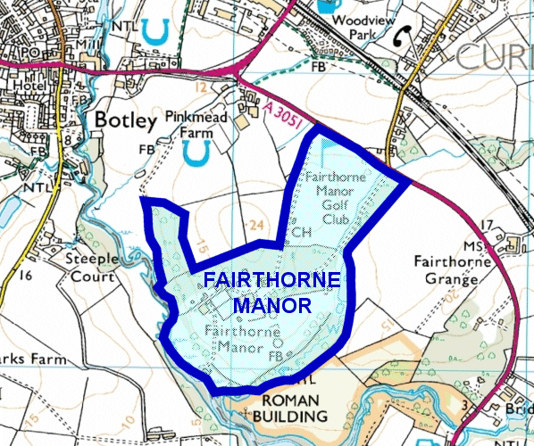

Hampshire Athletics
Cross-Country Championships
Saturday 9 January 2016 **DRAFT**
The 2016 Championships will be held at Fairthorne Manor near Botley, about eight miles to the east of Southampton.
Although Fairthorne Manor has already played host to a few cross-country races, e.g. for the RR10 League, the Championships will use a new and varied course taking advantage of the whole estate and using all its facilities.
Fairthorne Manor includes a former golf course and is now run as a Family Park and Campsite by the YMCA. As it is private property, the general public cannot access the site other than for organised events.
Course location

Course details
The course is based on three laps:
- The Arena Lap, a loop of approximately 1200m on sloping grassland, which can be seen from the main spectator area at the start and finish.
- The Medium Lap, approximately 2500m long, which leaves the Arena Lap via the woods and uses part of the former golf course
- The Full Lap, approximately 3500m long, which adds to the Medium Lap by taking in a circuit of the Campsite field.
Various modifications have been made to adjust the race distances for each age group.
Please note
No animals or pets of any kind, except guide and hearing dogs, are allowed anywhere in the grounds.
Smoking: YMCA Fairthorne Manor and grounds are a smoke free environment.
Parking: Parking for as many cars as possible will be provided in the grounds. We plan to arrange alternative parking within 15 minutes' walk of the course - please refer back to this page later for details.
Entry form
Alternatively, download the entry form as a Word document or PDF.
Please make sure that you fill in all your details, especially your club if you are making an individual entry.
Timetable
The timetable will be similar to previous years', with Championship races in ascending age order from Under 11 right up to Seniors and Veterans.
| 10:15 | Under 11 Boys | 2350 metres |
| 10:30 | Under 11 Girls | 2350 metres |
| 10:45 | Under 13 Boys | 3200 metres |
| 11:00 | Under 13 Girls | 3200 metres |
| 11:15 | Under 15 Boys | 4000 metres |
| 11:35 | Under 15 Girls | 4000 metres |
| 11:55 | Under 17 Women | 5000 metres |
| 12:20 | Under 17 Men | 6200 metres |
| 12:30 | Under 20 Women | 6200 metres |
| 12:55 | Senior and Veteran Women | 7850 metres |
| 13:50 | Under 20 Men | 9800 metres |
| 13:55 | Senior and Veteran Men | 11800 metres |
Race day notes
Runners and spectators: Please bring suitable footwear, both for racing and spectating.
Changing: some changing and showering facilities will be available.
Refreshments will be on sale, provided by YMCA Fairthorne Manor.
Medical cover will be provided.
Race number collection
Race numbers will be available for collection from the main admin marquee near the Start/Finish from 09:00.
Team Managers: please ensure that you give athletes the correct numbers to avoid problems compiling the results later. Complete club start lists will be given to you with the numbers.
Notes on entries
- All competitors must have Hampshire qualification: a. birth or b. nine months continuous residence or service in H.M. Forces prior to the date of the Championships, in Hampshire, the Isle of Wight or Channel Islands, and MUST NOT have competed for another county or in another county's championships during the preceding year.
- This is a Hampshire Club competition, and so unaffiliated runners will not be accepted.
- Age Qualification:
Qualification Date for Under 11, Under 13, Under 15 and Under 17 age groups is 31st August 2015.
Qualification Date for Under 20 age group is 31st December 2016. This date is the same as for the UK Inter-Counties Championships and ensures that all athletes taking part in the Under 20 races are eligible for Hampshire team selection.
Athletes wishing to compete in an older age group, e.g. Under 17 athletes wishing to compete in the Under 20 event, must specify clearly which age group is being entered, or you will be placed in the correct age group category according to your birth date.Male Female Must be born between U11B U11G 1 September 2004 - 9 January 2007
Note: All Under 11 competitors must be 9 years or over on the day of competition.U13B U13G 1 September 2002 - 31 August 2004 U15B U15G 1 September 2000 - 31 August 2002 U17M U17W 1 September 1998 - 31 August 2000 U20M U20W 1 January 1997 - 31 August 1998 SM SW on or before 31 December 1996 VM VW on or before 9 January 1976 (Men) or 9 January 1981 (Women) - Veteran competitors pay one entry fee and score in both Senior and Veteran age groups.
- Teams consist of FOUR to score in all age groups apart from Senior Men, where SIX will score.
Entry fee
The entry fee is £7.00 per individual. Please make cheques payable to: Hampshire Athletics.
Please return postal entries by Wednesday 23 December 2015.
The closing date for online entries is Wednesday 30 December 2015.
No entries are guaranteed after these dates.
Enquiries
Championship Secretary
Pam Rogers
99 Stride Avenue
Copnor
PORTSMOUTH
PO3 6HW